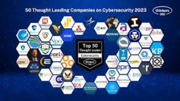
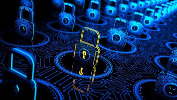

Все что нужно знать стартапам о кибербезопасности
Кибератаки со временем стали более частыми. Предприятия все чаще используют цифровые платформы для хранения своих данных, что повышает вероятность кибератак со стороны злоумышленников. Стартапы являются наиболее уязвимыми для этих атак, хотя мы видели, что крупные фирмы также становятся мишенью, что приводит к испорченной репутации или закрытию.

Большинство владельцев малого бизнеса настолько сосредоточены на развитии своих компаний, что обычно забывают включить кибербезопасность в свою деятельность как средство сдерживания киберпреступников. Таким образом, сегодня стартапы должны интегрировать кибербезопасность в свою деятельность из-за растущих угроз и атак.
Продолжайте читать, пока мы обсуждаем все, что стартапам нужно знать о кибербезопасности, включая ее причины и последствия, а также некоторые аспекты безопасности стартапов. советы, которые помогут вам защититься от хакеров в будущем.
Важность кибербезопасности для стартапов
Независимо от размера вашей фирмы, кибератаки неизбежны. Без надежной стратегии кибербезопасности вы рискуете потерять контроль над целостностью ваших данных и нанести ущерб бренду вашей компании, поскольку кибербезопасность защищает критически важные данные от хакеров и обеспечивает бесперебойную работу в долгосрочной перспективе.
Кроме того, надежный подход к обеспечению безопасности демонстрирует вашу заботу о своих клиентах и ??компании. Хотя у вас нет ресурсов для внедрения методов кибербезопасности, ваш статус стартапа дает вам большую мотивацию. В отличие от крупных организаций, которые могут быстро восстановиться после атаки, вам все равно есть что терять. Когда материализуется киберопасность, это может подорвать доверие ваших клиентов к вам и репутации вашей компании, хотя вы все еще расширяете свою клиентуру.
Кибератаки также обходятся дорого. Организация может инвестировать не менее 200 долларов в год. Будучи стартапом, вы не можете позволить себе тратить много времени, денег или других ресурсов, пытаясь найти причину нарушения безопасности.
Почему стартапы более уязвимы для кибератак?
Хакеры часто нацелены на стартапы, поскольку считают, что эти компании легче взломать из-за нехватки ресурсов и знаний для защиты от вредоносных угроз. По оценкам Института Понемон, примерно 45% кибератак направлены на малый и средний бизнес, и что 39% этих предприятий не имеют плана реагирования на инциденты.
Поскольку кибербезопасность занимает последнее место в списке приоритетов, многие новые предприниматели могут направить свой капитал на инструменты для построения своих фирм благодаря потребительскому спросу и жесткой отраслевой конкуренции. Они считают, что им это не нужно, пока это не произойдет с ними.
Такой менталитет позволяет киберпреступникам находить ваши слабые места, что облегчает их взлом. Кроме того, вероятность этих атак возрастает по мере того, как все больше предприятий становятся мобильными.
Как защитить свой стартап от кибератак?
Хакеры становятся более изобретательными по мере увеличения количества случаев кибератак; они даже используют сложные технологии для доступа к различным файлам и устройствам. Если да, то вы должны знать, что делать после взлома.
Как можно скорее сообщите пострадавшим, если хакеры получили доступ к вашей системе. Не совершайте той же ошибки, что и Yahoo, которая в течение многих лет не раскрывала уязвимости системы безопасности своим сотрудникам и потребителям.
Сообщите о ситуации и как можно скорее подайте уведомление о нарушении, чтобы специалисты могли разобраться.
Испытайте на себе кибератаку, научитесь выявлять уязвимости безопасности и предоставьте своим внутренним специалистам по ИТ или кибербезопасности контроль над ответом на взлом.
Если в вашей организации нет набора правил, сейчас самое время разработать его, чтобы вашим сотрудникам было что соблюдать в чрезвычайной ситуации.
Наем специалистов по кибербезопасности поможет вам предотвратить потерю данных или DLP . Позвольте профессионалам провести несколько тестов, чтобы определить восприимчивость вашей системы.

6 способов помешать хакерам атаковать вашу систему
Ограничьте количество членов команды, которые могут получить доступ к вашей учетной записи
Предоставление каждому доступа администратора может способствовать прозрачности, если ваша компания небольшая. Однако это может сделать любые данные уязвимыми для хакеров. Чтобы защитить свои учетные записи в социальных сетях от будущих кибератак, попробуйте поручить управление производительностью только одному человеку.
Создавайте надежные пароли
Слабые пароли — один из самых простых способов для хакеров получить важную информацию. Всегда используйте сложные, уникальные пароли, состоящие из символов, цифр и букв. Многие высокоэффективные менеджеры паролей невероятно безопасны, советуют выбирать сложные пароли и даже сообщают вам, вошел ли кто-то еще или включил ли кто-то ваш адрес электронной почты в утечку данных.
Обновите свои системы
Стартапы, использующие устаревшее оборудование и программное обеспечение, невероятно уязвимы для атак. Клиенты рассчитывают на то, что вы защитите их финансовую и личную информацию, но вы не сможете сделать это без обновленных систем и программного обеспечения. Если вы хотите воспитать культуру безопасности в своей компании, установите день для регулярной проверки того, что все сотрудники обновили свои системы и программное обеспечение.
Установите многофакторную аутентификацию
Многофакторная аутентификация все чаще используется во многих отраслях, и мобильный банкинг является типичным примером. Хорошо, что многофакторная аутентификация становится все более популярной, а не просто полагаться на пароли для идентификации и подтверждения того, вошли вы в учетную запись или нет.
Установите брандмауэр
Установка межсетевого экрана необходима для защиты от кибератак. Ваш брандмауэр защищает вашу сеть, отслеживая входящий и исходящий трафик данных и блокируя вредоносные пакеты данных и внешние угрозы.
Взаимодействуйте с экспертами
Чтобы процветать, стартапы должны действовать быстро и ловко, а посвящение времени и ресурсов безопасности может помешать этому движению. Вместо того, чтобы стремиться развивать все необходимые навыки внутри компании, поручите другим воспользоваться их опытом в области кибербезопасности, чтобы помочь вам выявить угрозы и защитить себя от них.
Заключение
Независимо от того, большая у вас организация или маленькая, работает стационарно или удаленно., кибербезопасность должна быть главной проблемой, поскольку все больше отраслей зависят от Интернета для хранения данных. Как только вы узнаете причины и опасности кибератак, вы будете готовы и сможете защитить свою компанию от кибератак.
Все что нужно знать стартапам о кибербезопасности 2025